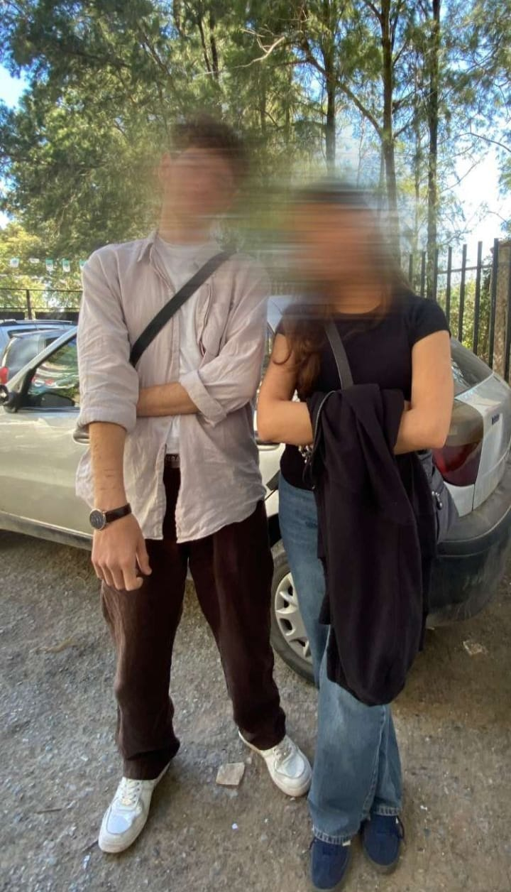

Il y a un poème que je lisais souvent sans vraiment le comprendre. Il disait
: "On ne connaît la valeur de quelqu'un qu'après son absence."
À l'époque, je le lisais sans rien ressentir...
Mais après t'avoir perdue, j'ai enfin compris ce que ces mots voulaient dire.
Certaines personnes ne réalisent la valeur d'un cœur qu'une fois qu'il n'est plus là.
Aujourd'hui, je sais que tu me manques bien plus que je ne l'aurais imaginé.